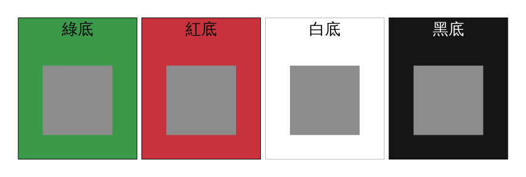
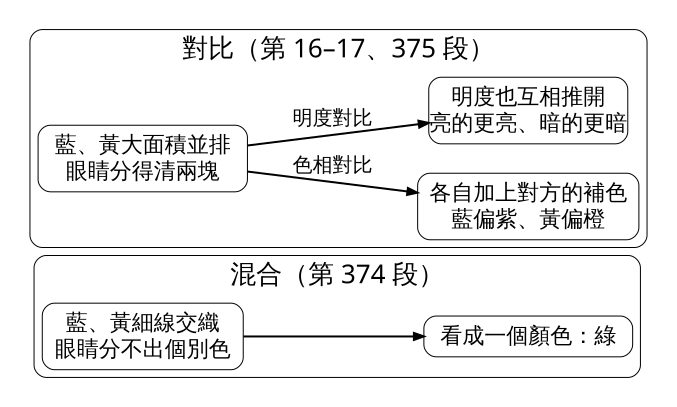
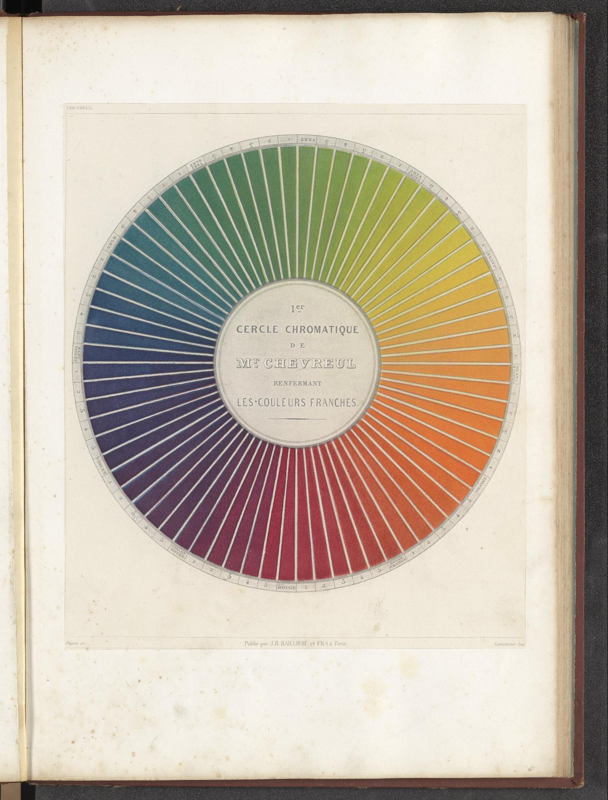
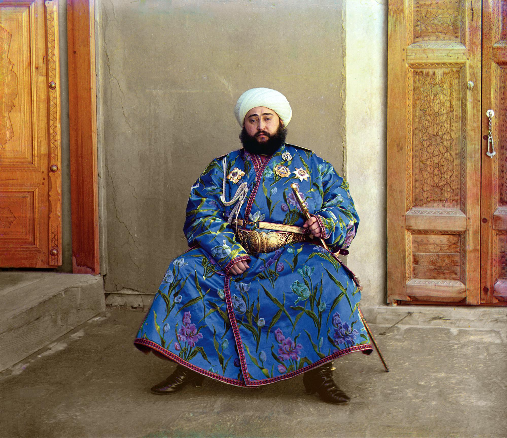

史料 Chevreul（1786–1889）原本研究動物脂肪的化學。1824 年，他被任命為 Gobelins 皇家製造廠染色部門的主任。依他在書中的作者序，上任後收到廠方一連串抱怨：淺藍、紫、灰、褐的毛線容易褪色，還有藍色、紫色帷幔裡用來畫陰影的黑線「缺乏力道」。
前幾項抱怨後來證實有道理。黑線那一項，他做了一件很像偵探的事：從法國和其他地方最有名的染坊收來黑色毛線，跟廠裡自己染的並排比較，結果外面的黑並沒有比較好。他在序裡寫，黑色顯得無力，是因為「the colour next to them」（它們旁邊的顏色），也就是色彩對比造成的。這件事讓他接下來十年同時做兩門研究：一門是染色化學，一門是顏色在眼睛裡怎麼互相影響。1828 年他向科學院提交初步成果，1836 年在 Gobelins 開公開講座，1839 年把它寫成書。
史料 書裡還記了一樁差點鬧上法院的糾紛（英譯本第 444 段）。幾位布商把紅、紫、藍三種單色布交給印花廠，訂的是黑色圖案。貨送回來，布商說印錯了：紅布上的圖案是綠的，紫布上的偏黃綠，藍布上的是橙褐色。Chevreul 調解的方法只有兩步。第一步，拿白紙把圖案周圍的底色遮住，圖案立刻變回黑色。第二步，把剪下來的黑布片放在紅、紫、藍布上，黑布片也跟著「變色」。印花廠沒有印錯，布商眼睛看到的也沒有錯。
經典理論 以下段落編號依 Charles Martel 的英譯本《The Principles of Harmony and Contrast of Colours》（Bohn's Scientific Library 第三版，George Bell and Sons）。英譯初版 1854 年，法文原書 1839 年由巴黎 Pitois-Levrault 出版。
定義（第 8 段） 同時看著兩條並排的色帶，只要色帶不太寬，眼睛就會看到兩種變化：一種改變顏色的強弱，他稱為「明度對比」（contrast of tone）；一種改變顏色本身的組成，他稱為「色相對比」（contrast of colour）。兩者合起來叫「同時對比」。
定律（第 16–17 段） Chevreul 先確認這些現象在眼睛不疲勞時會反覆出現，而且許多習慣判斷顏色的人看到的跟他一樣，才把它歸納成一句話：眼睛同時看到兩個相鄰的顏色時，它們會顯得「as dissimilar as possible」（盡可能不同），組成與明暗都是。第 17 段給了操作方法：顏色 o 和顏色 p 並排，眼睛看到的 p 會加上 o 的補色，o 也加上 p 的補色。
回到布商的糾紛。紅的補色是綠，所以紅布上的黑圖案被「加了綠」；藍的補色是橙，藍布上的黑就偏橙褐。圖 1 是同一個原理的簡化版：四個中央方塊的顏色數值完全相同。

圖 1｜四個中央方塊都是同一個灰（#8C8C8C），只有底色不同。依 Chevreul 第 16–17 段，綠底上的灰應偏紅，紅底上的灰應偏綠，白底上的灰顯得較暗，黑底上的灰顯得較亮。示意圖，實際效果會因螢幕與觀看距離而異。來源：本課程依 Chevreul《De la loi du contraste simultané des couleurs》1839（Martel 英譯第 8、16–17 段）繪製。
三種對比（第 77–81 段） Chevreul 特別把對比分成三種。同時對比是兩色同時在眼前；繼時對比是盯著一個顏色一段時間，移開視線後看到它的補色殘像，上一堂歌德寫過的殘像屬於這一種；混合對比則是殘像還在眼裡時，又看向另一個顏色，兩者疊在一起。他說，前人的討論常常把這三件事混為一談。
混合與對比（第 373–375 段） 他在談掛毯的章節裡又分出一組概念。藍線和黃線細細交織，眼睛分不出個別的線，看到的是綠，這叫混合。同樣的藍和黃各成一塊大面積並排，眼睛分得清兩塊，它們不但不會趨向綠，反而互相推開，各自偏向紅的方向：藍偏紫，黃偏橙（見圖 2）。同一組顏色，尺寸一變，結果就相反。

圖 2｜Chevreul 區分的「混合」與「對比」。來源：本課程依 Chevreul 1839（Martel 英譯第 16–17、373–375 段）繪製。
為了讓染工與設計者能預先查出補色，Chevreul 後來把顏色整理成色環。1864 年出版的圖冊《Des couleurs et de leurs applications aux arts industriels à l'aide des cercles chromatiques》第五圖版是「第一色環」，收錄 72 種最純的色相（見圖 3）。

圖 3｜Chevreul 的第一色環，收錄 72 種純色相。來源：M. E. Chevreul 著，René Henri Digeon 雕版，《Des couleurs et de leurs applications aux arts industriels à l'aide des cercles chromatiques》Plate V，Paris：J.-B. Baillière et fils，1864；Science History Institute 典藏。授權：Public domain（Public Domain Mark 1.0），來源頁面
實證研究 同時對比在今天的視覺研究裡稱為「色彩誘導」（chromatic induction）。Shevell 與 Kingdom 2008 年在《Annual Review of Psychology》的回顧指出，周圍的光會改變視網膜、外側膝狀核到視覺皮質各層的反應，所以同一種墨水印在不同背景上會看成不同顏色。他們也整理了另一批實驗：背景只要由兩種顏色組成，結果就無法用「把背景平均成一個顏色」來預測。Chevreul 的「加上鄰色的補色」適合當作第一步的估計，實際效果還受圖案大小、排列與周圍其他顏色影響。
Chevreul 的書後半部都在談應用，其中一整個部分寫室內裝飾。他給的建議都從同一條定律推出來，讀起來像一位很挑剔的室內設計顧問。
經典理論 白色雕像放在什麼牆前（第 585–587 段） 白色大理石、石膏像放在珍珠灰的牆前會很突出。要讓雕像更白，抵銷石材本身帶的一點紅，牆可以漆成麂皮色或橙灰；雕塑家偏好溫暖的色調時，牆就用藍灰。他甚至提到，牆漆成綠色會讓雕像帶上一點玫瑰色。銅像的情況更有趣：想強調氧化後的綠鏽，牆用紅；想讓沒氧化的金屬光澤發亮，牆用藍。第 587 段他特別交代，這些效果來自對比，跟牆面把色光反射到雕像上是兩回事。
他的推論是這樣走的：橙灰的補色偏藍，藍加在帶紅的白石上，紅就被抵掉，石頭看起來更白。牆變成一個調色工具，雕像本身一點也沒動。
經典理論 劇院包廂的內襯（第 592–595 段） 包廂內襯絕對不要用玫瑰紅、酒紅或淺緋紅，因為觀眾的皮膚會顯得發綠。Chevreul 用紙片做實驗證明：膚色紙放在玫瑰色紙旁，膚色紙失去紅潤，偏向黃綠；換成淺綠紙，膚色紙反而更紅潤。他說這個實驗在人工照明下重做，結果相同。第 595 段接著補了一個限制：綠色太深時，明度對比會壓過色相對比，臉只會顯得暗淡，綠的好處就不見了。
經典理論 牆面與邊框（第 604–614 段） 房間的壁紙宜淺不宜深，因為深色吸光。紅與紫的壁紙不建議，理由同樣是對膚色不利。要在壁紙上掛畫，壁紙應該素面，顏色和畫的主色拉開最大的對比。替單色壁紙配邊框時，他建議用壁紙顏色的補色：黃牆配紫或藍的邊，綠牆配紅，藍牆配橙或黃。邊框的明度只要比牆深到「不會顯得呆滯」就好，不必再多。
拿這些規則看一間日常的房子。一面米白牆旁邊放一張深胡桃木桌，牆會比單獨看時更白、更冷一點，桌子更深。同一張桌子搬到淺灰藍的牆前，木頭的橙色會被推得更明顯。油漆行的色票只有指甲大，周圍是白卡紙；漆到整面牆以後，它的鄰居變成地板、天花板、窗外的天光。Chevreul 處理黑線問題的方法也可以照搬：買油漆前，把色卡貼在實際的牆面、家具旁邊看，再用一張挖了洞的白紙遮住周圍，比較兩次的差別。
史料 第 588 段還有一條反方向的規則：自然史博物館的展示櫃內部要白色或很淺的中性灰，因為博物學家要看清標本「本來的顏色」，任何有色的背景都會干擾判斷。同一條定律，美術館拿來美化作品，自然史博物館拿來避免干擾。
史料 Sergei Prokudin-Gorskii 在 1911 年替剛即位的布哈拉埃米爾 Alim Khan 拍了一張肖像，原始玻璃底片現藏美國國會圖書館。依國會圖書館的說明，他用一片約 3 × 9 英寸的窄長玻璃板，透過紅、綠、藍三片濾鏡快速連拍同一個場景三次，放映時再用同樣三色的光疊回彩色。今天看到的彩色版本是圖書館把三張黑白底片掃描、對齊、調整後重建的（見圖 4）。

圖 4｜Prokudin-Gorskii 拍攝的布哈拉埃米爾 Alim Khan，1911 年，三色分色玻璃底片的數位彩色重建（邊緣的彩色條紋是三張底片未完全重疊處）。來源：Sergei Prokudin-Gorskii，Library of Congress Prints and Photographs Division（prokc.21887）。授權：Public domain，來源頁面
拿 Chevreul 的眼睛來看這張照片（以下是本課的分析，不是攝影師留下的說明）。埃米爾的長袍是飽和的藍，上面有粉紅與紅色的花和綠葉；背後是一面淡灰米色的牆和一扇木門。照第 17 段，藍色會替旁邊的顏色加上一點橙：木門的暖色因此更暖，淡灰的牆面也被推向偏暖的米色。反過來，大面積的暖灰背景讓藍袍顯得更藍。三張底片本身只有黑白，彩色是在放映或重建時才合成出來的；我們看到的「藍袍配暖牆」，有一部分是照片裡的顏色，一部分是眼睛在兩塊顏色交界處做的加工。
拍人像的時候也一樣。Chevreul 說玫瑰色包廂讓臉發綠、淺綠包廂讓臉紅潤，換成相機前的背景布、牆面或衣服，道理相同。
誤解一：顏色看起來不對，一定是顏料或染料出了問題。 Gobelins 的黑線與印花布的糾紛都是反例（史料，作者序與第 444 段）。Chevreul 的檢驗法很簡單：用白紙把周圍遮住再看一次。遮住後顏色恢復，問題就在鄰色。
誤解二：點描派的「視覺混色」就是同時對比。 Chevreul 在第 374–375 段把兩件事分開：細到分不出來的色點會混合成一個顏色，看得清的色塊才會互相推開。依 Molnar 1997 年〈Le contraste simultané dans les arts visuels〉（收於 Roque 等編《Michel-Eugène Chevreul. Un savant, des couleurs !》），Seurat 知道 Chevreul 的研究並嘗試應用，效果卻「不總是最理想」；Molnar 也認為印象派畫家並不知道他的研究（依二手文獻）。
誤解三：補色並排，畫面就一定和諧、鮮豔。 Chevreul 自己就加了條件：太深的綠會用明度對比把膚色壓暗（第 595 段）；邊框的明度只該比牆深一點（第 613 段）；色帶太寬，效果就變弱（第 8 段）。他也提醒畫家，第 330–332 段寫到，只要如實畫出物體原本的顏色，對比自然會在觀者眼裡出現；畫家若把眼睛看到的偏色也畫進去，結果會被誇大一次。
看（5 分鐘）：同一張紙，四種鄰居 找一張灰色或米色的小紙片（發票背面、牛皮紙信封撕一角都可以），依序放在家裡四個不同顏色的東西上：紅色的書封、綠色的植物葉子或杯子、白紙、深色的褲子。每次盯著看十秒，記下紙片看起來偏什麼顏色、偏亮還是偏暗。最後拿一張白紙挖一個小洞蓋上去，只露出紙片，再看一次。
做（10 分鐘）：替一件物品換牆 選一件你喜歡的小東西，例如一個馬克杯、一顆橘子或一本書。分別放在四個背景前：一面白牆、一面深色布（衣服或毛巾）、一個和它顏色接近的背景、一個和它顏色相反的背景（橘子配藍色的東西、紅杯子配綠色的東西），每個背景用手機以預設模式拍一張，光線保持一樣。把照片並排，看物件本身的顏色哪一張最「像」它，哪一張最搶眼。
回顧（5 分鐘）
來源 | 類型 | 查核日期 |
經典理論、史料 | 2026-11-22 | |
史料（出版資訊） | 2026-11-22 | |
Wikipedia：Michel Eugène Chevreul（生卒年、1824 年任 Gobelins 染色主任、英譯出版年） | 二手文獻 | 2026-11-22 |
Science History Institute：Plate V, Premier cercle chromatique, 1864 | 史料（典藏頁） | 2026-11-22 |
Shevell & Kingdom, "Color in Complex Scenes," Annual Review of Psychology 59: 143–166, 2008 | 實證研究 | 2026-11-22 |
二手文獻（學術專書章節） | 2026-11-22 | |
Library of Congress：The Empire that was Russia — Making Color Images | 史料（拍攝方法） | 2026-11-22 |
Library of Congress：The Empire that was Russia（埃米爾肖像 1911 年） | 史料（典藏說明） | 2026-11-22 |
圖片授權 | 2026-11-22 | |
圖片授權 | 2026-11-22 |
延伸閱讀：Josef Albers，《Interaction of Color》（1963），下一堂會讀到；Chevreul 英譯本第二部「室內裝飾」與「服裝」兩章，可以當成一本十九世紀的配色手冊來翻。

,_Emir_of_Bukhara,_photographed_by_S.M._Prokudin-Gorskiy_in_1911.jpg){kind=link}